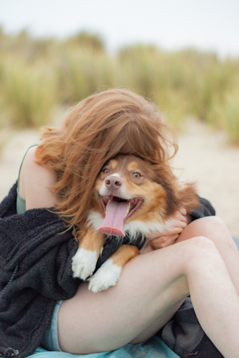

hi, i'm danielle
My name is Danielle Kormylo and I am the proud owner of our family business Kormylo Photography! In my early days as a photographer, I focused mainly on portrait photography, however over time I found myself increasingly drawn to the beauty and serenity of landscapes. I discovered that I had a natural talent for capturing the grandeur and uniqueness of different landscapes and I fell in love with the process of exploring new locations and discovering hidden gems. With honours in my Associate Science Photography degree and Bachelor of Kinesiology degree in the making, my skill set has drastically expanded and this combination of art and science is what sets my photography apart. I am constantly striving to push the boundaries of what is possible through my work. From scouting out locations to developing and printing film, I enjoy each step of the photography process!
I'm always inspired by the natural beauty of my surroundings and have plans to explore the world and capture its wonders through my camera lens. Through my travels, I have been fortunate enough to experience and appreciate different cultures and traditions around the world. I enjoy using my camera as a way to document and showcase the beauty of these cultures and the people who make them special. Whether it's a portrait of a local artisan, a sweeping landscape dotted with ancient architecture, or a bustling city street filled with vibrant colours, I strive to capture the essence of the place and its meaning. I truly believe that photography is a universal language that can bring people from different cultures and backgrounds together. Through my work, I hope to bridge gaps and foster greater understanding and appreciation for the world we all share.
Please join me on my journey as I roam the world expressing my passion for film photography and document my explorations into the breathtaking natural world. From towering mountain ranges to serene sunset seascapes, I aim to convey the magnificence of our planet and inspire others to appreciate its wonders.
hi, i'm bryce
My name is Bryce Kormylo, I am a website builder and enjoy my time working as a second shooter for my wife, Danielle. My approach to photography is to create distinctive images that capture the viewer's attention. I aim to produce a diverse set of captivating photos at the end of each shoot, with each image offering something unique. Film photography is particularly valuable in achieving this goal, as the mechanical interface between photographer and camera presents a fascinating challenge. Film has been increasingly interesting for me as I constantly learning about the developing and printing processes, which has been a new and exciting aspect of photography for me.
While my interests frequently change, I have a strong desire to learn and delve deeply into each one. In general I enjoy solving problems in creative ways, as well as designing and building things. Aside from my diverse interests, as a website designer and builder, my skills in website development and design complement our team's expertise. I find building websites to be a liberating pursuit that enables me to explore different areas of expertise and satisfy my insatiable desire to learn. I relish the creative process of designing websites and take great pride in seeing my work come to life, providing valuable assets to our clients. As a team with Danielle, I also provide a unique behind-the-scenes aid to make our clients look their best and keep them at ease during the website building process.
In my free time away from the camera and computer, I enjoy working professionally as a bartender and indulge in my love for sailing, building with various materials, playing video games, and exploring the outdoors. While I take pride in being versatile and having diverse interests, I also derive great satisfaction from applying my skills to each of these passions.